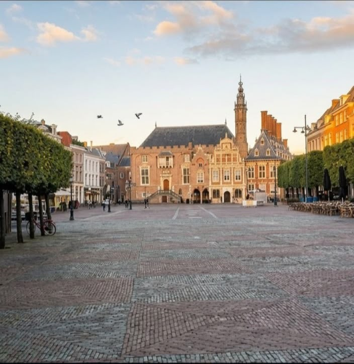
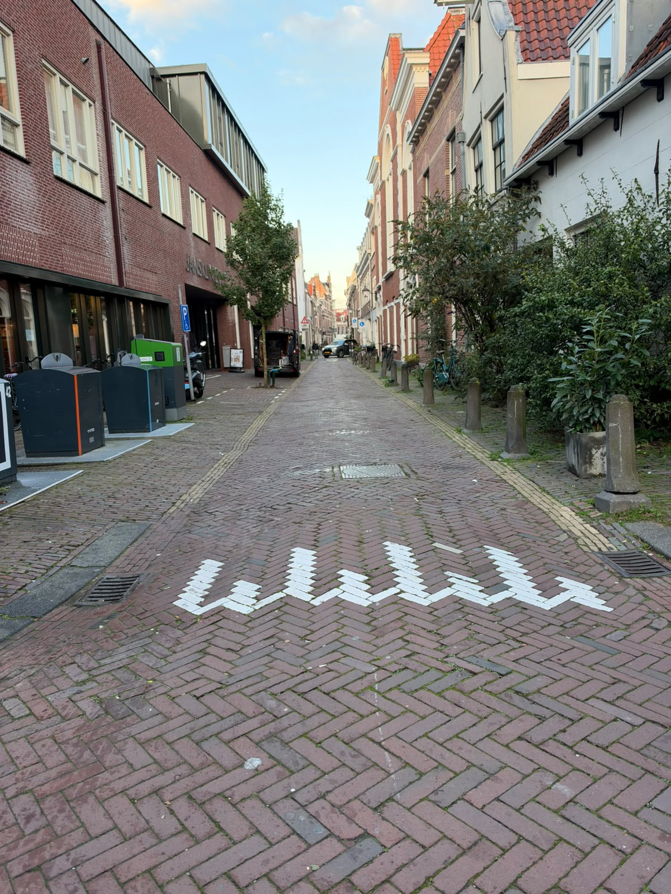

Grote Markt
The central square of Haarlem and the heart of the city. Surrounded by historic buildings, cafes and the St. Bavokerk, it is the natural starting point for any visit.
 Location: City Centre, Haarlem
Location: City Centre, Haarlem

What to see

The central square of Haarlem and the heart of the city. Surrounded by historic buildings, cafes and the St. Bavokerk, it is the natural starting point for any visit.
Location: City Centre, Haarlem

A large Gothic church that dominates the skyline. Its tall tower and historic interior make it one of Haarlem’s most recognisable landmarks.
Location: Grote Markt 22, Haarlem

A compact historic centre with narrow streets, brick gabled houses and canals. Easy to explore on foot in a few hours.
Location: Around Grote Markt, Haarlem